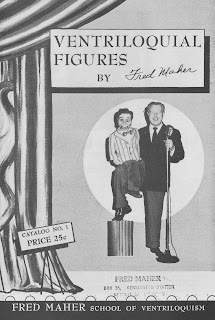

Skinny Dugan #2
7/10/2010
{kind=link}

Questions: When I first studied ventriloquism with Maher Studios in 1963, I remember how Fred Maher's Skinny Dugan #2 by McElroy became so iconic. Was this figure one-of-a-kind? Did it ever become a figure produced by Maher Studios? Are there more Skinny figures around? I've never seen one for sale. With whom does Maher's Skinny reside? Thanks, Rick.
* * * * * *
From Mr. D: Although Mrs. Maher tried to duplicate and sell the Skinney you refer to, she was never truly successful. How can anyone expect to duplicate the McElroy's masterpieces? (Greg Claassen is the only person I know of who has come close.)
Skinny #2 was the featured figure on much of the Maher advertising through the '40s, '50s and '60s. It is seen on the cover photo of this vintage Maher Catalog (right) which is awarded today to David Wagner. ( Contact Mr. D to claim this prize.)
Oh yes, Fred Maher's Skinny Dugan is now owned by Jeff Dunham. Jeff can be seen demonstrating it in one of the bonus features found on the "I'm No Dummy" DVD available at your retailers. Fascinating!